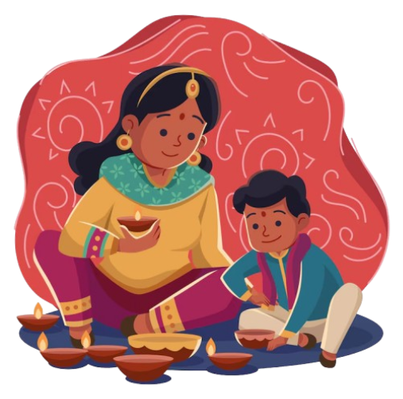
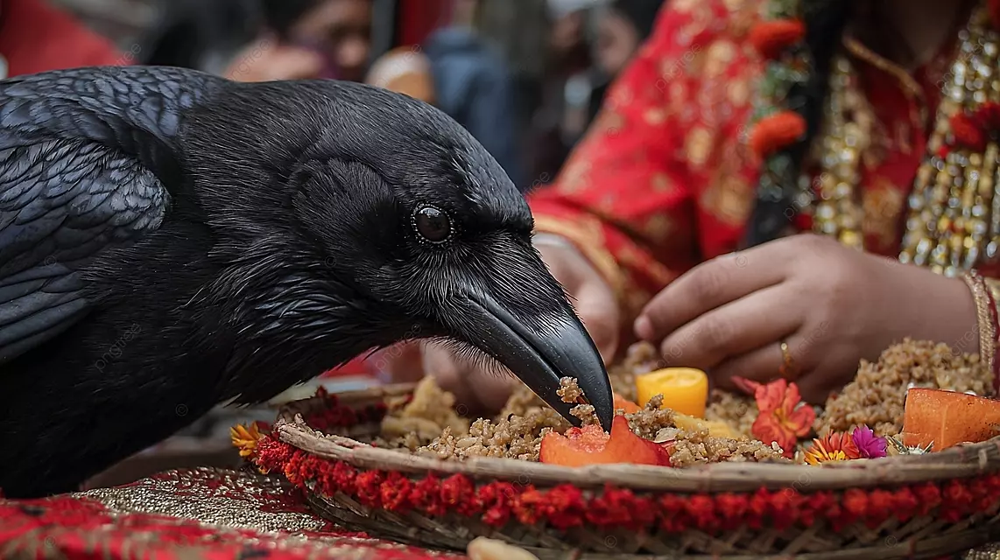
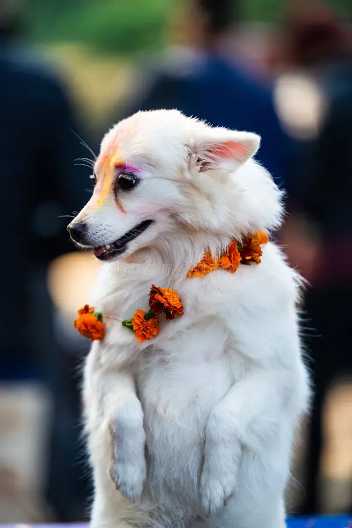
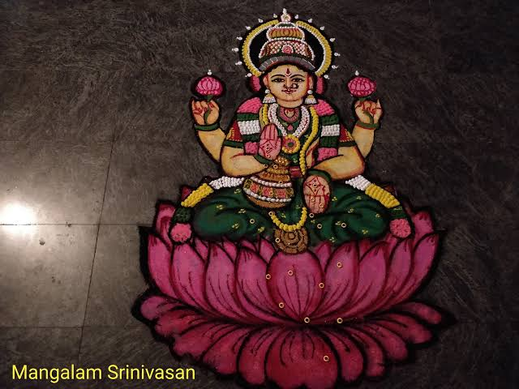
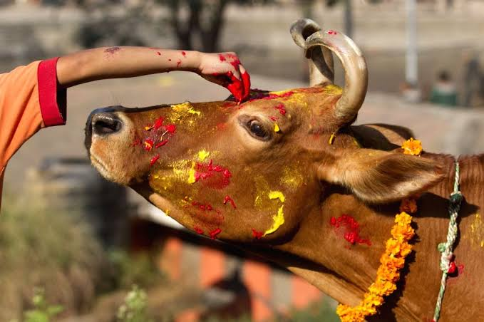
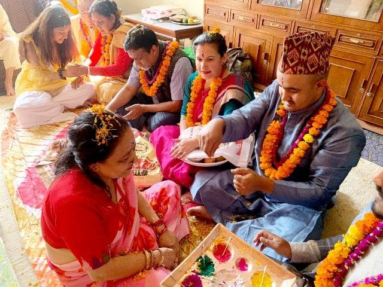
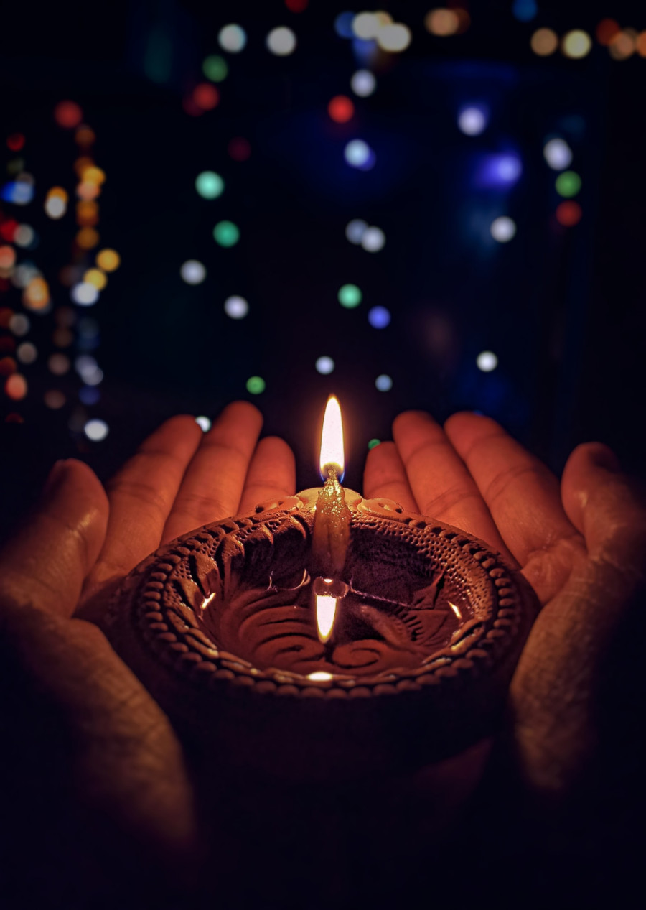

Five glowing days of diyas, marigold garlands, rangoli and music honoring crows, dogs, cows, laxmi and the bond between brothers and sisters.
Explore Tihar
Days of Celebration

On the first day of Tihar, crows are worshipped.Crows (kaag in Nepali) are revered as the divine messengers of Yamaraj, the Hindu god of death and justice.

On the second day of Tihar, dogs are worshipped. Both household pets and street/stray dogs are adorned with a bright marigold flower garland (mala) around their necks and a sacred red vermilion mark (tika) made from powder, rice, and yogurt on their foreheads.

On the third day of Tihar, the goddess of wealth and prosperity (Laxmi) is worshipped. A mandala painting called a "rangoli" is created on the ground in front of the house using colored powders, rice, flowers.

On the fourth day of Tihar, cows as well as yourself is worshipped. Maha puja, ritual involves worshipping one's own inner self and soul (Mha means body in Newari) to purify and empower the spirit for the coming year.

On the fifth day of Tihar, the bond between brothers and sisters is celebrated. Brothers visit their sisters and give them gifts, while sisters perform aarti for their brothers and apply 7 different colors in their forehead.

Tihar teaches us to honor animals, respect nature, and cherish the bonds of family and friendship. Light a lamp, share sweets and spread kindness this festival.